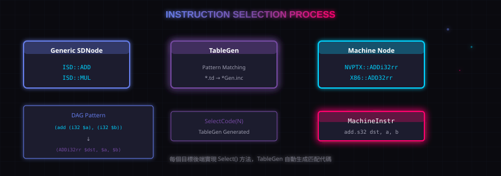

9. 指令选择：Instruction Selection
经过了类型合法化、操作合法化、DAG Combiner 之后，DAG 里大多数节点已经是"合法"的了。
现在要把通用 SDNode 替换成目标机器能认识的节点。
核心目标
把 ISD::* 节点替换成目标后端定义的机器节点（MachineSDNode）。

配图：指令选择流程图
9.1 ISD vs 目标节点
例如：
ISD::ADD是通用的"加法"节点X86::ADD32rr是 X86 目标的"32位寄存器加法"指令NVPTX::ADDu32rr是 NVPTX 目标的"32位无符号加法"指令
9.2 TableGen 自动生成
SelectionDAG 使用 TableGen 来描述"什么 DAG 模式匹配成什么机器指令"。
目标后端在 .td 文件里定义 patterns，TableGen 会生成匹配代码。
一个典型的 pattern 定义看起来像：
def ADDi32rr : Pat<(i32 (add i32:$a, i32:$b)),
(ADD32rr RAX, $a, $b)>;
意思是：模式 (add i32:$a, i32:$b) 匹配到 ADD32rr 指令。
9.3 SelectCode 分发
SelectionDAG 使用 SelectCode(N) 来为每个节点选择合适的机器指令。这个函数是 TableGen 自动生成的，内部是一个巨大的 switch 分发。
9.4 指令选择的输出
指令选择完成后，DAG 里的节点全部变成了目标机器节点（MachineSDNode）。这些节点对应于最终要发射的机器指令。